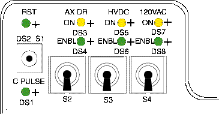
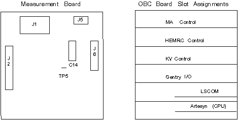

Proprietary to General Electric
Direction 5114045-800, Rev# 10
LightSpeed 4.X Service Information (Advanced)
Proprietary to General Electric |
| Required Persons | Preliminary Reqs | Procedure | Finalization |
|---|---|---|---|
| 1 |
This section describes the calibration check system internal mA metering circuits.
| Last Revised: | October 2004 |
| POTENTIAL FOR PERSONAL INJURY. | |
| GANTRY ROTATES AT SPEEDS UP TO 120RPM. | |
| NEVER PUT ANY BODY PART INTO THE GANTRY WITHOUT FIRST DISABLING THE AXIAL DRIVE AND VERIFYING (CHECK TWICE) THAT IT IS DISABLED. ENSURE THAT THE DRIVE STATUS LED IS NOT LIT. DO NOT SERVICE THE GANTRY IF THIS LED IS ON. |
Inside the Gantry:
| POTENTIAL FOR PERSONAL INJURY. | |
| GANTRY ROTATES AT SPEEDS UP TO 120RPM. | |
| NEVER PUT ANY BODY PART INTO THE GANTRY WITHOUT FIRST DISABLING THE AXIAL DRIVE AND VERIFYING (CHECK TWICE) THAT IT IS DISABLED. ENSURE THAT THE DRIVE STATUS LED IS NOT LIT. DO NOT SERVICE THE GANTRY IF THIS LED IS ON. |
Switch OFF the HVDC ENABLE on STC backplane.
Illustration 1: STC Backplane Service Switches

Switch OFF the AXIAL DRIVE ENABLE on STC backplane.
Rotate the Anode tank to the 2 o’clock position.
Engage the gantry rotational lock.
Select [SERVICE DESKTOP] .
Select [REPLACEMENT] .
Select [HV SUBSYSTEM CHANGE] .
Select [GENERATOR CHARACTERIZATION] .
Select [READ METERING] .
| NOTE: | On the display, enter a time delay in seconds, to provide enough
time to walk from the console to the DVM, and record the reading. The test
will not begin until this time delay expires. Once it begins, the test enables the meter circuit for only 4 seconds. |
Use a DVM as an mA meter; connect it to the hardware on the anode side:
Connect the black lead to TP8 (ACAL1) on the mA board.
Connect the red lead to TP11 (ACAL2) on the mA board.
Illustration 2: Tank Measurement Board

On the Display, select the [ACCEPT] button.
Record the displayed, and measured, Anode mA values for “Circuit OFF” and “Circuit ON”.
| NOTE: | The Cathode side should read approximately 19 mA during “Circuit On”. |
Disconnect the test equipment from the Anode side, if used.
| NOTE: | When you exit Generator Characterization, this test may generate kV board tube spit counter = x error messages. |
Use a DVM as an mA meter:
Connect the black lead to TP9 (CCAL1) on the mA board.
Connect the red lead to TP14 (CCAL2) on the mA board.
On the Display, Select the [ACCEPT] button.
Record the displayed and measured Cathode mA values for “Circuit OFF” and “Circuit ON”.
| NOTE: | The Anode side should read approximately 20mA during “Circuit On”. |
Disconnect the test equipment from the Cathode side if used.
| NOTE: | When you exit Generator Characterization, this test may generate kV board tube spit counter = x error messages. |
No finalization required.